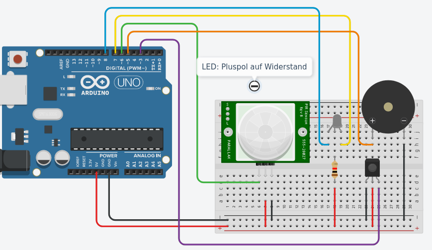

Wahlunterricht Mikroelektronik und Technik am Gymnasium Waldkraiburg
Diese Seite befindet sich im Aufbau.
Grundausstattung
Die Materialien für den Kurs wurden durch Spenden folgender Organisationen finanziert:
Wir danken den Spendern herzlich für ihre Unterstützung.
Materialliste Bezugsquellen
3D-Druck und CAD
3D-Druck
Projekte mit dem Calliope mini
Calliope mini
Projekte mit dem Arduino Uno und dem ESP32
Die ersten Schritte
Start von Linux und Anschließen des Arduinos
Blink - das erste Programm
Leuchtdioden: LEDs
Taster
Alarmanlage
Wir bauen eine voll funktionsfähige Alarmanlage, die über eine Fernsteuerung aktiviert werden kann:

Bewegungsmelder Passiver Buzzer Infrarot-Fernbedienung Rotations-Encoder Platinenentwurf mit Fritzing Hinweise zum Löten
Messwerterfassung
Temperaturmessung
Wir bauen ein digitales Thermometer und verwenden es, um Messreihen am Computer aufzuzeichnen.
Temperatursensor Dallas DS18B20 OLED-Display zur Darstellung der Messwerte Grafische Ausgabe am Computer Daten über die Serielle Schnittstelle einlesen Messwerte als Diagramm am Computer darstellen Messwerte ins Internet schicken
Helligkeitsmessung
Mit einem Fotowiderstand kann die Helligkeit bestimmt werden.Der Fotowiderstand
Entfernungsmessung
Mit Hilfe eines Ultraschallsensors, der zum Beispiel auch in Einparkhilfen von Autos verbaut ist, messen wir den Abstand zu einem Objekt.
Der Ultraschallsensor
Mehrere Sensoren: Felder und Schleifen
Geschwindigkeitsmessung
Wir bauen Lichtschranken, mit denen die Geschwindigkeit von Fahrzeugen gemessen werden können.
Reflexlichtschranke
Laserlichtschranke
Diskobeleuchtung
Wir bauen aus einem Mikrofon, einem Arduino UNO und einer LED-Matrix eine Partylicht,das dem Rhythmus der Musik folgt.YouTube Video Partylicht
RGB-LED-Matrix Tonaufnahmen mit einem Mikrofon Das Partylicht
ESP32
a) Ein Mikrocontroller im Netzwerk
Der ESP32-Chip kann über ein drahtloses Netzwerk (WLAN) gesteuert werden.Seine Programmierung kann auch über die bekannte Arduino-IDE erfolgen.
Vorbereitung der Arduino-IDE für den ESP32 Schalten einer LED über einen Internetbrowser Senden und Empfangen von Daten über Bluetooth Speichern von Messdaten in einem Google Sheet
b) Ein Bluetooth-Gamepad für Pac Man
Joystick-Modul Bluetooth Low Energy (BLE)
Selbstfahrender Roboter
Auf Grundlage des Scru-Fe-Roboters von rtheiss bauen wir einen Roboter, der Hindernisse erkennt und ihnen ausweichen kann.
Motorsteuerung
Ultraschall-Entfernungsmesser
Servomotoren
Der Schaukasten
Kugelbahn Binäruhr
Blinken ohne Pause - Interrupts
Interrupts
Die Schaltpläne sind mit Tinkercad erstellt.
Haftungsausschluss
Inhalt des Onlineangebotes
Der Autor übernimmt keinerlei Gewähr für die Aktualität, Richtigkeit und Vollständigkeit der bereitgestellten Informationen auf unserer Website. Haftungsansprüche gegen den Autor, welche sich auf Schäden materieller oder ideeller Art beziehen, die durch die Nutzung oder Nichtnutzung der dargebotenen Informationen bzw. durch die Nutzung fehlerhafter und unvollständiger Informationen verursacht wurden, sind grundsätzlich ausgeschlossen, sofern seitens des Autors kein nachweislich vorsätzliches oder grob fahrlässiges Verschulden vorliegt.
Verweise und Links
Bei direkten oder indirekten Verweisen auf fremde Webseiten (“Hyperlinks”), die außerhalb des Verantwortungsbereiches des Autors liegen, würde eine Haftungsverpflichtung ausschließlich in dem Fall in Kraft treten, in dem der Autor von den Inhalten Kenntnis hat und es ihm technisch möglich und zumutbar wäre, die Nutzung im Falle rechtswidriger Inhalte zu verhindern.
Urheber- und Kennzeichenrecht
Der Autor ist bestrebt, in allen Publikationen die Urheberrechte der verwendeten Bilder, Grafiken, Tondokumente, Videosequenzen und Texte zu beachten, von ihm selbst erstellte Bilder, Grafiken, Tondokumente, Videosequenzen und Texte zu nutzen oder auf lizenzfreie Grafiken, Tondokumente, Videosequenzen und Texte zurückzugreifen.
Quelle: Haftungsausschluss Muster von Haftungsausschluss.org und das Datenschutzgesetz